Catalog B — source assemblies
{"source": {"path": "reference-inputs/source-world.zip", "sha256": "4353737d536677469d3b895e3515496ab64fab7b224e43428eb96e8c09724a51", "sha256_after": "4353737d536677469d3b895e3515496ab64fab7b224e43428eb96e8c09724a51"}, "scan_scope": {"regions": ["ether/dimensions/eh_s2/yharnam/region/r.-1.-1.mca"], "selection_note": "Bounded first pass in one Yharnam region. Carrier IDs are search seeds; connectivity in the original world proposes boundaries, not model names or F families. Adjacent independent props may still be grouped; user can split or mark context.", "vertical_gap_carriers": ["minecraft:oak_log", "minecraft:birch_log", "minecraft:spruce_log", "minecraft:jungle_log", "minecraft:acacia_log", "minecraft:dark_oak_log"], "carrier_groups": [{"label": "Дерево / растительность", "ids": ["minecraft:oak_log", "minecraft:birch_log", "minecraft:spruce_log", "minecraft:jungle_log", "minecraft:acacia_log", "minecraft:dark_oak_log", "minecraft:light_blue_wool", "minecraft:lime_wool", "minecraft:pink_wool", "minecraft:yellow_wool", "minecraft:cyan_wool"]}, {"label": "Могила / мемориал", "ids": ["minecraft:smooth_quartz_stairs", "minecraft:waxed_weathered_cut_copper_stairs", "minecraft:dark_oak_button"]}, {"label": "Книги / багаж / ёмкости", "ids": ["minecraft:dead_horn_coral_fan", "minecraft:dead_bubble_coral_fan", "minecraft:dead_bubble_coral", "minecraft:oxidized_cut_copper_stairs"]}, {"label": "Статуя / фонарь", "ids": ["minecraft:weathered_cut_copper_stairs", "minecraft:waxed_cut_copper_stairs", "minecraft:dead_brain_coral_wall_fan", "minecraft:emerald_ore", "minecraft:flower_pot", "minecraft:oak_button"]}]}}
C001 · Дерево / растительность: конечная группа соседних source carriers; граница требует ручной проверки
Only explicitly listed source terrain regions; exact complete carrier cluster modulo Y rotation, not whole-world occurrence count; совпадений: 3; Пример: eh_s2:yharnam [-284, 46, -68]; rotations: [0, 90, 270]
Взвешенные/альтернативные модели: детерминированное приближение.
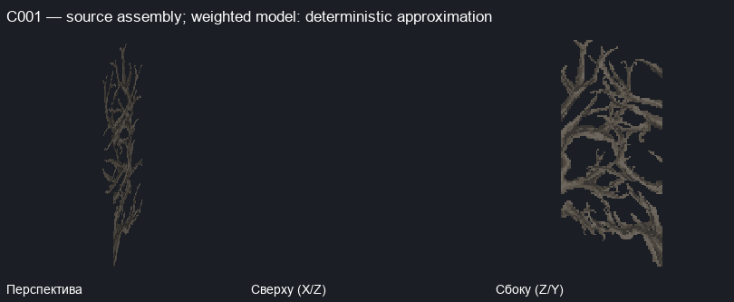


Source cells
| № | relative XYZ | source/properties | apps/transforms |
|---|
| 1 | [0, 0, 0] | minecraft:oak_log {'axis': 'x'} | [{'model': 'minecraft:block/oak_log', 'y': 180, 'offset': [0, 0, 0]}] |
| 2 | [1, 0, 1] | minecraft:jungle_log {'axis': 'x'} | [{'model': 'minecraft:block/jungle_log', 'y': 180, 'offset': [1, 0, 1]}] |
| 3 | [0, 3, 0] | minecraft:spruce_log {'axis': 'x'} | [{'model': 'minecraft:block/spruce_log', 'y': 180, 'offset': [0, 3, 0]}] |
| 4 | [1, 3, 1] | minecraft:acacia_log {'axis': 'x'} | [{'model': 'minecraft:block/acacia_log', 'y': 180, 'offset': [1, 3, 1]}] |
| 5 | [0, 6, 0] | minecraft:birch_log {'axis': 'x'} | [{'model': 'minecraft:block/birch_log', 'y': 180, 'preview_alternatives': 2, 'offset': [0, 6, 0]}] |
| 6 | [1, 6, 1] | minecraft:dark_oak_log {'axis': 'x'} | [{'model': 'minecraft:block/dark_oak_log', 'y': 180, 'offset': [1, 6, 1]}] |
Full context source cells
| relative XYZ | source/properties |
|---|
C001 OBJECT: 1+2; 3=CONTEXT / SPLIT:1+2 /3+4 / CONNECTED / NOT_OBJECT / NEEDS_REVIEW
C002 · Могила / мемориал: конечная группа соседних source carriers; граница требует ручной проверки
Only explicitly listed source terrain regions; exact complete carrier cluster modulo Y rotation, not whole-world occurrence count; совпадений: 1; Пример: eh_s2:yharnam [-283, 43, -76]; rotations: [0]
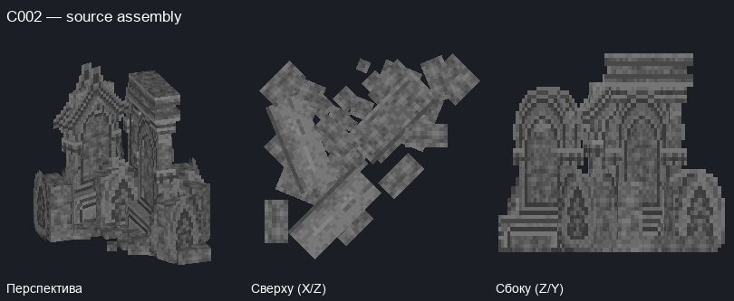

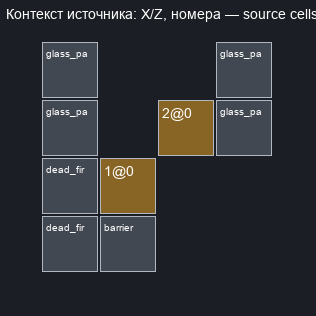
Source cells
| № | relative XYZ | source/properties | apps/transforms |
|---|
| 1 | [0, 0, 0] | minecraft:dark_oak_button {'face': 'floor', 'facing': 'east', 'powered': 'true'} | [{'model': 'minecraft:block/addon/tombstone_gathered_4', 'y': 90, 'offset': [0, 0, 0]}] |
| 2 | [1, 0, 1] | minecraft:dark_oak_button {'face': 'floor', 'facing': 'south', 'powered': 'true'} | [{'model': 'minecraft:block/addon/tombstone_gathered_6', 'y': 180, 'offset': [1, 0, 1]}] |
Full context source cells
| relative XYZ | source/properties |
|---|
| [-1, -1, -1] | minecraft:dead_fire_coral_fan {'waterlogged': 'false'} |
| [-1, -1, 0] | minecraft:dead_fire_coral_fan {'waterlogged': 'false'} |
| [-1, -1, 1] | minecraft:pink_stained_glass_pane {'east': 'false', 'north': 'false', 'south': 'true', 'waterlogged': 'false', 'west': 'true'} |
| [-1, -1, 2] | minecraft:light_gray_stained_glass_pane {'east': 'false', 'north': 'true', 'south': 'true', 'waterlogged': 'false', 'west': 'false'} |
| [-1, 0, 1] | minecraft:glass_pane {'east': 'false', 'north': 'false', 'south': 'true', 'waterlogged': 'false', 'west': 'true'} |
| [-1, 0, 2] | minecraft:glass_pane {'east': 'false', 'north': 'true', 'south': 'false', 'waterlogged': 'false', 'west': 'false'} |
| [0, -1, -1] | minecraft:barrier {} |
| [0, -1, 0] | minecraft:barrier {} |
| [0, 0, -1] | minecraft:barrier {} |
| [0, 1, -1] | minecraft:barrier {} |
| [0, 1, 0] | minecraft:barrier {} |
| [1, -1, 1] | minecraft:barrier {} |
| [1, 1, 1] | minecraft:barrier {} |
| [2, -1, 1] | minecraft:pink_stained_glass_pane {'east': 'true', 'north': 'false', 'south': 'true', 'waterlogged': 'false', 'west': 'false'} |
| [2, -1, 2] | minecraft:light_gray_stained_glass_pane {'east': 'false', 'north': 'true', 'south': 'true', 'waterlogged': 'false', 'west': 'false'} |
| [2, 0, 1] | minecraft:glass_pane {'east': 'true', 'north': 'false', 'south': 'true', 'waterlogged': 'false', 'west': 'false'} |
| [2, 0, 2] | minecraft:glass_pane {'east': 'false', 'north': 'true', 'south': 'true', 'waterlogged': 'false', 'west': 'false'} |
C002 OBJECT: 1+2; 3=CONTEXT / SPLIT:1+2 /3+4 / CONNECTED / NOT_OBJECT / NEEDS_REVIEW
C003 · Книги / багаж / ёмкости: конечная группа соседних source carriers; граница требует ручной проверки
Only explicitly listed source terrain regions; exact complete carrier cluster modulo Y rotation, not whole-world occurrence count; совпадений: 1; Пример: eh_s2:yharnam [-432, 60, -210]; rotations: [0]
Взвешенные/альтернативные модели: детерминированное приближение.
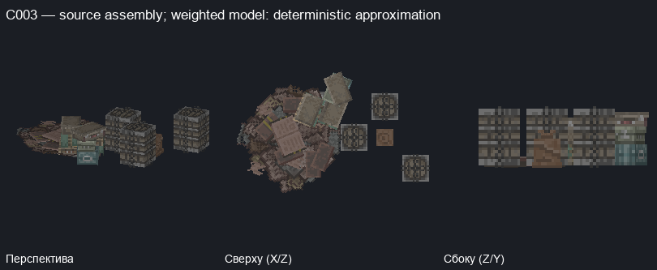
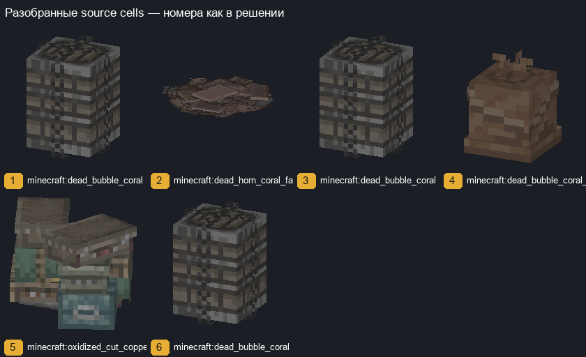

Source cells
| № | relative XYZ | source/properties | apps/transforms |
|---|
| 1 | [0, 0, 0] | minecraft:dead_bubble_coral {'waterlogged': 'false'} | [{'model': 'minecraft:block/addon/barrel_0', 'weight': 500, 'preview_alternatives': 6, 'offset': [0, 0, 0]}] |
| 2 | [-4, 0, 1] | minecraft:dead_horn_coral_fan {'waterlogged': 'false'} | [{'model': 'minecraft:block/addon/books_0', 'weight': 100, 'preview_alternatives': 2, 'offset': [-4, 0, 1]}] |
| 3 | [-2, 0, 1] | minecraft:dead_bubble_coral {'waterlogged': 'false'} | [{'model': 'minecraft:block/addon/barrel_0', 'weight': 500, 'preview_alternatives': 6, 'offset': [-2, 0, 1]}] |
| 4 | [-1, 0, 1] | minecraft:dead_bubble_coral_fan {'waterlogged': 'false'} | [{'model': 'minecraft:block/addon/bag_0', 'weight': 100, 'preview_alternatives': 4, 'offset': [-1, 0, 1]}] |
| 5 | [-3, 0, 2] | minecraft:oxidized_cut_copper_stairs {'facing': 'south', 'half': 'bottom', 'shape': 'straight', 'waterlogged': 'false'} | [{'model': 'minecraft:block/addon/cases_0', 'y': 0, 'offset': [-3, 0, 2]}] |
| 6 | [-1, 0, 2] | minecraft:dead_bubble_coral {'waterlogged': 'false'} | [{'model': 'minecraft:block/addon/barrel_0', 'weight': 500, 'preview_alternatives': 6, 'offset': [-1, 0, 2]}] |
Full context source cells
| relative XYZ | source/properties |
|---|
| [-5, -1, -1] | minecraft:deepslate_gold_ore {} |
| [-5, -1, 0] | minecraft:deepslate_gold_ore {} |
| [-5, -1, 1] | minecraft:deepslate_gold_ore {} |
| [-5, -1, 2] | minecraft:deepslate_gold_ore {} |
| [-5, -1, 3] | minecraft:deepslate_gold_ore {} |
| [-5, 0, -1] | minecraft:dead_horn_coral_fan {'waterlogged': 'false'} |
| [-4, -1, -1] | minecraft:deepslate_gold_ore {} |
| [-4, -1, 0] | minecraft:deepslate_gold_ore {} |
| [-4, -1, 1] | minecraft:deepslate_gold_ore {} |
| [-4, -1, 2] | minecraft:deepslate_gold_ore {} |
| [-4, -1, 3] | minecraft:deepslate_gold_ore {} |
| [-4, 0, 2] | minecraft:dead_fire_coral_fan {'waterlogged': 'false'} |
| [-4, 0, 3] | minecraft:dead_fire_coral_fan {'waterlogged': 'false'} |
| [-3, -1, -1] | minecraft:deepslate_gold_ore {} |
| [-3, -1, 0] | minecraft:deepslate_gold_ore {} |
| [-3, -1, 1] | minecraft:deepslate_gold_ore {} |
| [-3, -1, 2] | minecraft:deepslate_gold_ore {} |
| [-3, -1, 3] | minecraft:deepslate_gold_ore {} |
| [-3, 1, 2] | minecraft:barrier {} |
| [-2, -1, -1] | minecraft:deepslate_gold_ore {} |
| [-2, -1, 0] | minecraft:deepslate_gold_ore {} |
| [-2, -1, 1] | minecraft:deepslate_gold_ore {} |
| [-2, -1, 2] | minecraft:deepslate_gold_ore {} |
| [-2, -1, 3] | minecraft:deepslate_gold_ore {} |
| [-2, 0, 0] | minecraft:spruce_button {'face': 'floor', 'facing': 'south', 'powered': 'false'} |
| [-2, 0, 2] | minecraft:dead_fire_coral_fan {'waterlogged': 'false'} |
| [-1, -1, -1] | minecraft:deepslate_gold_ore {} |
| [-1, -1, 0] | minecraft:deepslate_gold_ore {} |
| [-1, -1, 1] | minecraft:deepslate_gold_ore {} |
| [-1, -1, 2] | minecraft:deepslate_gold_ore {} |
| [-1, -1, 3] | minecraft:deepslate_gold_ore {} |
| [0, -1, -1] | minecraft:deepslate_gold_ore {} |
| [0, -1, 0] | minecraft:deepslate_gold_ore {} |
| [0, -1, 1] | minecraft:deepslate_gold_ore {} |
| [0, -1, 2] | minecraft:stone_bricks {} |
| [0, -1, 3] | minecraft:stone_bricks {} |
| [0, 0, 2] | minecraft:blackstone_wall {'east': 'none', 'north': 'none', 'south': 'none', 'up': 'true', 'waterlogged': 'false', 'west': 'none'} |
| [0, 0, 3] | minecraft:dead_fire_coral_fan {'waterlogged': 'false'} |
| [0, 1, 2] | minecraft:acacia_fence {'east': 'false', 'north': 'false', 'south': 'false', 'waterlogged': 'false', 'west': 'false'} |
| [1, -1, -1] | minecraft:deepslate_gold_ore {} |
| [1, -1, 0] | minecraft:deepslate_gold_ore {} |
| [1, -1, 1] | minecraft:deepslate_gold_ore {} |
| [1, -1, 2] | minecraft:deepslate_gold_ore {} |
| [1, -1, 3] | minecraft:stone_bricks {} |
| [1, 0, 1] | minecraft:dead_fire_coral_fan {'waterlogged': 'false'} |
| [1, 0, 3] | minecraft:bricks {} |
| [1, 1, 3] | minecraft:bricks {} |
C003 OBJECT: 1+2; 3=CONTEXT / SPLIT:1+2 /3+4 / CONNECTED / NOT_OBJECT / NEEDS_REVIEW
C004 · Статуя / фонарь: конечная группа соседних source carriers; граница требует ручной проверки
Only explicitly listed source terrain regions; exact complete carrier cluster modulo Y rotation, not whole-world occurrence count; совпадений: 1; Пример: eh_s2:yharnam [-301, 56, -207]; rotations: [0]
Взвешенные/альтернативные модели: детерминированное приближение.
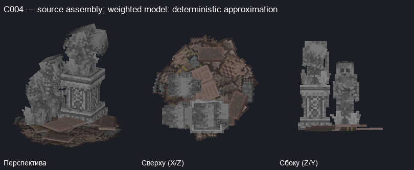
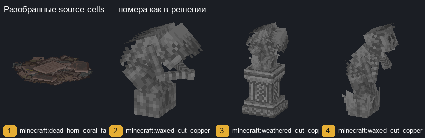
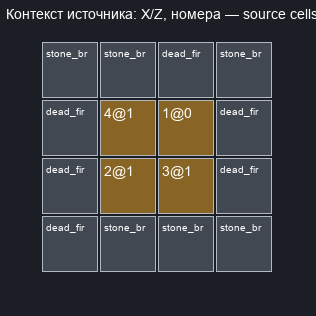
Source cells
| № | relative XYZ | source/properties | apps/transforms |
|---|
| 1 | [0, 0, 0] | minecraft:dead_horn_coral_fan {'waterlogged': 'false'} | [{'model': 'minecraft:block/addon/books_0', 'weight': 100, 'preview_alternatives': 2, 'offset': [0, 0, 0]}] |
| 2 | [-1, 1, -1] | minecraft:waxed_cut_copper_stairs {'facing': 'west', 'half': 'top', 'shape': 'straight', 'waterlogged': 'false'} | [{'model': 'minecraft:block/hold/statue_4', 'y': 180, 'offset': [-1, 1, -1]}] |
| 3 | [0, 1, -1] | minecraft:weathered_cut_copper_stairs {'facing': 'west', 'half': 'bottom', 'shape': 'straight', 'waterlogged': 'false'} | [{'model': 'minecraft:block/hold/statue', 'y': 180, 'offset': [0, 1, -1]}] |
| 4 | [-1, 1, 0] | minecraft:waxed_cut_copper_stairs {'facing': 'west', 'half': 'bottom', 'shape': 'straight', 'waterlogged': 'false'} | [{'model': 'minecraft:block/hold/statue_3', 'y': 180, 'offset': [-1, 1, 0]}] |
Full context source cells
| relative XYZ | source/properties |
|---|
| [-2, -1, -2] | minecraft:stone_bricks {} |
| [-2, -1, -1] | minecraft:stone_bricks {} |
| [-2, -1, 0] | minecraft:stone_bricks {} |
| [-2, -1, 1] | minecraft:stone_bricks {} |
| [-2, 0, -2] | minecraft:dead_fire_coral_fan {'waterlogged': 'false'} |
| [-2, 0, -1] | minecraft:dead_fire_coral_fan {'waterlogged': 'false'} |
| [-2, 0, 0] | minecraft:dead_fire_coral_fan {'waterlogged': 'false'} |
| [-1, -1, -2] | minecraft:stone_bricks {} |
| [-1, -1, -1] | minecraft:stone_bricks {} |
| [-1, -1, 0] | minecraft:stone_bricks {} |
| [-1, -1, 1] | minecraft:stone_bricks {} |
| [0, -1, -2] | minecraft:stone_bricks {} |
| [0, -1, -1] | minecraft:stone_bricks {} |
| [0, -1, 0] | minecraft:stone_bricks {} |
| [0, -1, 1] | minecraft:stone_bricks {} |
| [0, 0, 1] | minecraft:dead_fire_coral_fan {'waterlogged': 'false'} |
| [1, -1, -2] | minecraft:stone_bricks {} |
| [1, -1, -1] | minecraft:stone_bricks {} |
| [1, -1, 0] | minecraft:stone_bricks {} |
| [1, -1, 1] | minecraft:stone_bricks {} |
| [1, 0, -1] | minecraft:dead_fire_coral_fan {'waterlogged': 'false'} |
| [1, 0, 0] | minecraft:dead_fire_coral_fan {'waterlogged': 'false'} |
C004 OBJECT: 1+2; 3=CONTEXT / SPLIT:1+2 /3+4 / CONNECTED / NOT_OBJECT / NEEDS_REVIEW
C005 · Дерево / растительность: конечная группа соседних source carriers; граница требует ручной проверки
Only explicitly listed source terrain regions; exact complete carrier cluster modulo Y rotation, not whole-world occurrence count; совпадений: 1; Пример: eh_s2:yharnam [-169, 55, -40]; rotations: [0]
Взвешенные/альтернативные модели: детерминированное приближение.
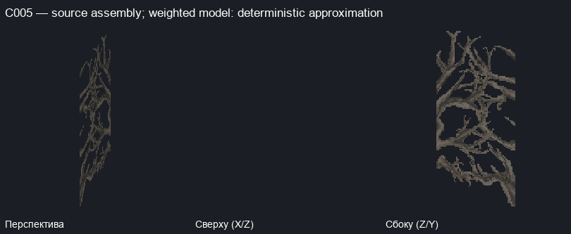
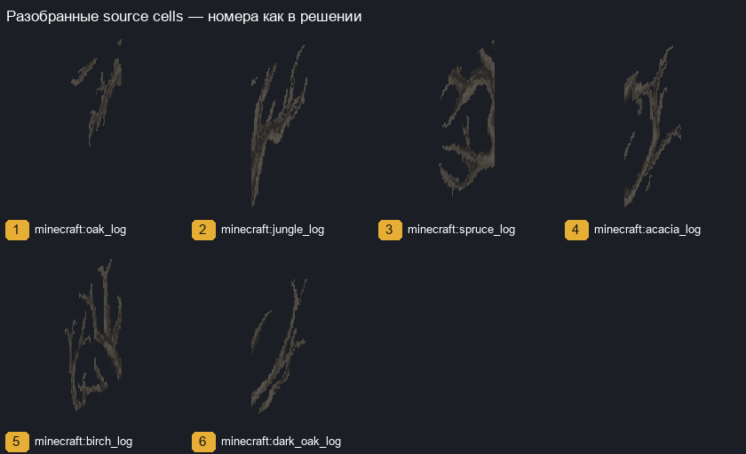
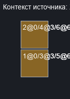
Source cells
| № | relative XYZ | source/properties | apps/transforms |
|---|
| 1 | [0, 0, 0] | minecraft:oak_log {'axis': 'x'} | [{'model': 'minecraft:block/oak_log', 'y': 180, 'offset': [0, 0, 0]}] |
| 2 | [0, 0, 1] | minecraft:jungle_log {'axis': 'x'} | [{'model': 'minecraft:block/jungle_log', 'y': 180, 'offset': [0, 0, 1]}] |
| 3 | [0, 3, 0] | minecraft:spruce_log {'axis': 'x'} | [{'model': 'minecraft:block/spruce_log', 'y': 180, 'offset': [0, 3, 0]}] |
| 4 | [0, 3, 1] | minecraft:acacia_log {'axis': 'x'} | [{'model': 'minecraft:block/acacia_log', 'y': 180, 'offset': [0, 3, 1]}] |
| 5 | [0, 6, 0] | minecraft:birch_log {'axis': 'x'} | [{'model': 'minecraft:block/birch_log', 'y': 180, 'preview_alternatives': 2, 'offset': [0, 6, 0]}] |
| 6 | [0, 6, 1] | minecraft:dark_oak_log {'axis': 'x'} | [{'model': 'minecraft:block/dark_oak_log', 'y': 180, 'offset': [0, 6, 1]}] |
Full context source cells
| relative XYZ | source/properties |
|---|
C005 OBJECT: 1+2; 3=CONTEXT / SPLIT:1+2 /3+4 / CONNECTED / NOT_OBJECT / NEEDS_REVIEW
C006 · Могила / мемориал: конечная группа соседних source carriers; граница требует ручной проверки
Only explicitly listed source terrain regions; exact complete carrier cluster modulo Y rotation, not whole-world occurrence count; совпадений: 1; Пример: eh_s2:yharnam [-274, 42, -75]; rotations: [0]
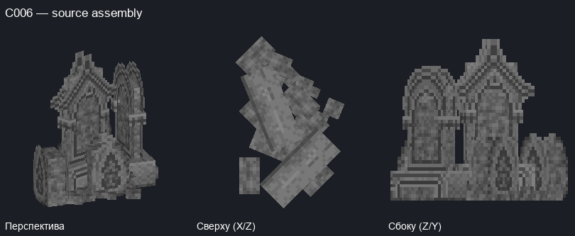
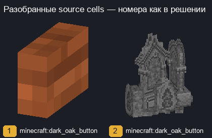
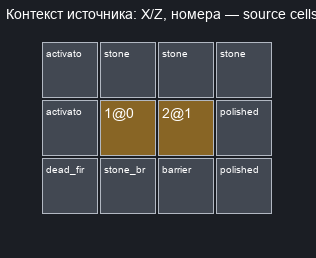
Source cells
| № | relative XYZ | source/properties | apps/transforms |
|---|
| 1 | [0, 0, 0] | minecraft:dark_oak_button {'face': 'wall', 'facing': 'west', 'powered': 'false'} | [{'model': 'minecraft:block/acacia_button', 'y': 270, 'x': 90, 'uvlock': True, 'offset': [0, 0, 0]}] |
| 2 | [1, 1, 0] | minecraft:dark_oak_button {'face': 'floor', 'facing': 'east', 'powered': 'true'} | [{'model': 'minecraft:block/addon/tombstone_gathered_4', 'y': 90, 'offset': [1, 1, 0]}] |
Full context source cells
| relative XYZ | source/properties |
|---|
| [-1, -1, -1] | minecraft:stone {} |
| [-1, -1, 0] | minecraft:stone {} |
| [-1, -1, 1] | minecraft:stone {} |
| [-1, 0, -1] | minecraft:dead_fire_coral_fan {'waterlogged': 'false'} |
| [-1, 0, 0] | minecraft:activator_rail {'powered': 'false', 'shape': 'north_south', 'waterlogged': 'false'} |
| [-1, 0, 1] | minecraft:activator_rail {'powered': 'false', 'shape': 'north_south', 'waterlogged': 'false'} |
| [0, -1, -1] | minecraft:stone_bricks {} |
| [0, -1, 0] | minecraft:stone {} |
| [0, -1, 1] | minecraft:stone {} |
| [1, -1, -1] | minecraft:stone {} |
| [1, -1, 0] | minecraft:stone {} |
| [1, -1, 1] | minecraft:stone {} |
| [1, 0, -1] | minecraft:dead_fire_coral_fan {'waterlogged': 'false'} |
| [1, 0, 0] | minecraft:barrier {} |
| [1, 1, -1] | minecraft:barrier {} |
| [1, 2, 0] | minecraft:barrier {} |
| [2, -1, 1] | minecraft:stone {} |
| [2, 0, -1] | minecraft:polished_diorite_slab {'type': 'bottom', 'waterlogged': 'false'} |
| [2, 0, 0] | minecraft:polished_diorite_slab {'type': 'bottom', 'waterlogged': 'false'} |
C006 OBJECT: 1+2; 3=CONTEXT / SPLIT:1+2 /3+4 / CONNECTED / NOT_OBJECT / NEEDS_REVIEW
C007 · Книги / багаж / ёмкости: конечная группа соседних source carriers; граница требует ручной проверки
Only explicitly listed source terrain regions; exact complete carrier cluster modulo Y rotation, not whole-world occurrence count; совпадений: 1; Пример: eh_s2:yharnam [-302, 56, -196]; rotations: [0]
Взвешенные/альтернативные модели: детерминированное приближение.
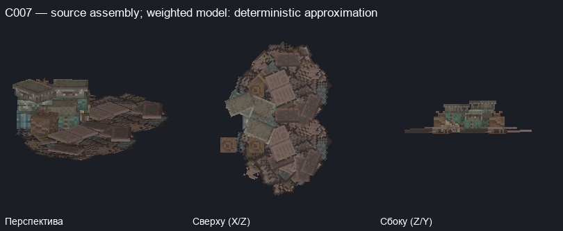
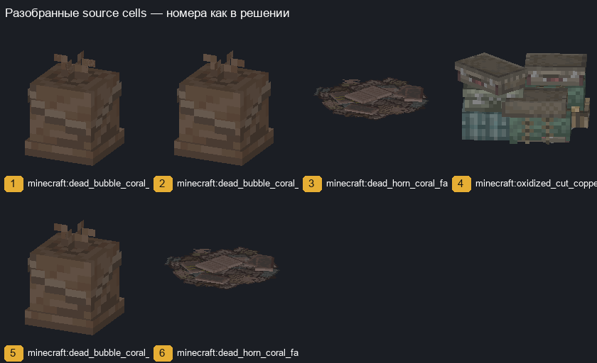
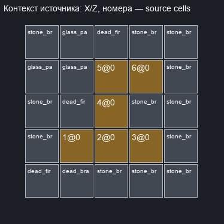
Source cells
| № | relative XYZ | source/properties | apps/transforms |
|---|
| 1 | [0, 0, 0] | minecraft:dead_bubble_coral_fan {'waterlogged': 'false'} | [{'model': 'minecraft:block/addon/bag_0', 'weight': 100, 'preview_alternatives': 4, 'offset': [0, 0, 0]}] |
| 2 | [1, 0, 0] | minecraft:dead_bubble_coral_fan {'waterlogged': 'false'} | [{'model': 'minecraft:block/addon/bag_0', 'weight': 100, 'preview_alternatives': 4, 'offset': [1, 0, 0]}] |
| 3 | [2, 0, 0] | minecraft:dead_horn_coral_fan {'waterlogged': 'false'} | [{'model': 'minecraft:block/addon/books_0', 'weight': 100, 'preview_alternatives': 2, 'offset': [2, 0, 0]}] |
| 4 | [1, 0, 1] | minecraft:oxidized_cut_copper_stairs {'facing': 'west', 'half': 'bottom', 'shape': 'straight', 'waterlogged': 'false'} | [{'model': 'minecraft:block/addon/cases_0', 'y': 90, 'offset': [1, 0, 1]}] |
| 5 | [1, 0, 2] | minecraft:dead_bubble_coral_fan {'waterlogged': 'false'} | [{'model': 'minecraft:block/addon/bag_0', 'weight': 100, 'preview_alternatives': 4, 'offset': [1, 0, 2]}] |
| 6 | [2, 0, 2] | minecraft:dead_horn_coral_fan {'waterlogged': 'false'} | [{'model': 'minecraft:block/addon/books_0', 'weight': 100, 'preview_alternatives': 2, 'offset': [2, 0, 2]}] |
Full context source cells
| relative XYZ | source/properties |
|---|
| [-1, -1, -1] | minecraft:stone_bricks {} |
| [-1, -1, 0] | minecraft:stone_bricks {} |
| [-1, -1, 1] | minecraft:stone_bricks {} |
| [-1, -1, 2] | minecraft:stone_bricks {} |
| [-1, -1, 3] | minecraft:stone_bricks {} |
| [-1, 0, -1] | minecraft:dead_fire_coral_fan {'waterlogged': 'false'} |
| [-1, 0, 2] | minecraft:iron_bars {'east': 'true', 'north': 'false', 'south': 'false', 'waterlogged': 'false', 'west': 'true'} |
| [-1, 1, 2] | minecraft:glass_pane {'east': 'true', 'north': 'false', 'south': 'false', 'waterlogged': 'false', 'west': 'true'} |
| [0, -1, -1] | minecraft:stone_bricks {} |
| [0, -1, 0] | minecraft:stone_bricks {} |
| [0, -1, 1] | minecraft:stone_bricks {} |
| [0, -1, 2] | minecraft:stone_bricks {} |
| [0, -1, 3] | minecraft:stone_bricks {} |
| [0, 0, -1] | minecraft:dead_brain_coral_fan {'waterlogged': 'false'} |
| [0, 0, 1] | minecraft:dead_fire_coral_fan {'waterlogged': 'false'} |
| [0, 0, 2] | minecraft:iron_bars {'east': 'false', 'north': 'false', 'south': 'true', 'waterlogged': 'false', 'west': 'true'} |
| [0, 0, 3] | minecraft:iron_bars {'east': 'false', 'north': 'true', 'south': 'true', 'waterlogged': 'false', 'west': 'false'} |
| [0, 1, 2] | minecraft:glass_pane {'east': 'false', 'north': 'false', 'south': 'true', 'waterlogged': 'false', 'west': 'true'} |
| [0, 1, 3] | minecraft:glass_pane {'east': 'false', 'north': 'true', 'south': 'true', 'waterlogged': 'false', 'west': 'false'} |
| [1, -1, -1] | minecraft:stone_bricks {} |
| [1, -1, 0] | minecraft:stone_bricks {} |
| [1, -1, 1] | minecraft:stone_bricks {} |
| [1, -1, 2] | minecraft:stone_bricks {} |
| [1, -1, 3] | minecraft:stone_bricks {} |
| [1, 0, 3] | minecraft:dead_fire_coral_fan {'waterlogged': 'false'} |
| [1, 1, 1] | minecraft:barrier {} |
| [2, -1, -1] | minecraft:stone_bricks {} |
| [2, -1, 0] | minecraft:stone_bricks {} |
| [2, -1, 1] | minecraft:stone_bricks {} |
| [2, -1, 2] | minecraft:stone_bricks {} |
| [2, -1, 3] | minecraft:stone_bricks {} |
| [3, -1, -1] | minecraft:stone_bricks {} |
| [3, -1, 0] | minecraft:stone_bricks {} |
| [3, -1, 1] | minecraft:stone_bricks {} |
| [3, -1, 2] | minecraft:stone_bricks {} |
| [3, -1, 3] | minecraft:stone_bricks {} |
C007 OBJECT: 1+2; 3=CONTEXT / SPLIT:1+2 /3+4 / CONNECTED / NOT_OBJECT / NEEDS_REVIEW
C008 · Статуя / фонарь: конечная группа соседних source carriers; граница требует ручной проверки
Only explicitly listed source terrain regions; exact complete carrier cluster modulo Y rotation, not whole-world occurrence count; совпадений: 1; Пример: eh_s2:yharnam [-421, 84, -91]; rotations: [0]
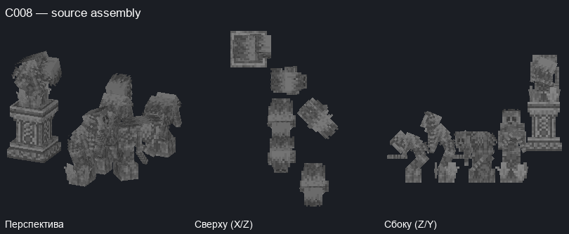
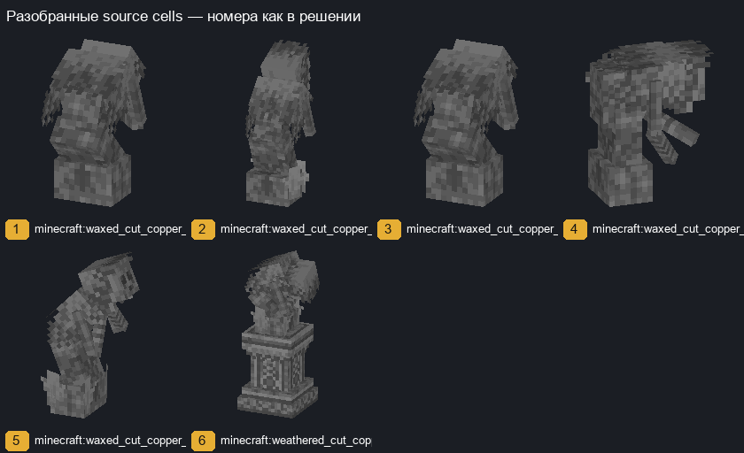

Source cells
| № | relative XYZ | source/properties | apps/transforms |
|---|
| 1 | [0, 0, 0] | minecraft:waxed_cut_copper_stairs {'facing': 'south', 'half': 'top', 'shape': 'straight', 'waterlogged': 'false'} | [{'model': 'minecraft:block/hold/statue_4', 'y': 90, 'offset': [0, 0, 0]}] |
| 2 | [-1, 0, 1] | minecraft:waxed_cut_copper_stairs {'facing': 'south', 'half': 'bottom', 'shape': 'straight', 'waterlogged': 'false'} | [{'model': 'minecraft:block/hold/statue_3', 'y': 90, 'offset': [-1, 0, 1]}] |
| 3 | [-1, 0, 2] | minecraft:waxed_cut_copper_stairs {'facing': 'south', 'half': 'top', 'shape': 'straight', 'waterlogged': 'false'} | [{'model': 'minecraft:block/hold/statue_4', 'y': 90, 'offset': [-1, 0, 2]}] |
| 4 | [0, 0, 2] | minecraft:waxed_cut_copper_stairs {'facing': 'west', 'half': 'top', 'shape': 'outer_left', 'waterlogged': 'false'} | [{'model': 'minecraft:block/hold/statue_5', 'y': 90, 'offset': [0, 0, 2]}] |
| 5 | [-1, 0, 3] | minecraft:waxed_cut_copper_stairs {'facing': 'west', 'half': 'bottom', 'shape': 'straight', 'waterlogged': 'false'} | [{'model': 'minecraft:block/hold/statue_3', 'y': 180, 'offset': [-1, 0, 3]}] |
| 6 | [-2, 1, 4] | minecraft:weathered_cut_copper_stairs {'facing': 'west', 'half': 'bottom', 'shape': 'straight', 'waterlogged': 'false'} | [{'model': 'minecraft:block/hold/statue', 'y': 180, 'offset': [-2, 1, 4]}] |
Full context source cells
| relative XYZ | source/properties |
|---|
| [-3, -1, -1] | minecraft:barrier {} |
| [-3, -1, 0] | minecraft:barrier {} |
| [-3, -1, 1] | minecraft:barrier {} |
| [-3, -1, 2] | minecraft:barrier {} |
| [-3, -1, 3] | minecraft:barrier {} |
| [-3, -1, 4] | minecraft:barrier {} |
| [-3, -1, 5] | minecraft:barrier {} |
| [-3, 0, -1] | minecraft:cut_copper_stairs {'facing': 'west', 'half': 'top', 'shape': 'straight', 'waterlogged': 'false'} |
| [-3, 0, 0] | minecraft:cut_copper_stairs {'facing': 'west', 'half': 'top', 'shape': 'straight', 'waterlogged': 'false'} |
| [-3, 0, 1] | minecraft:cut_copper_stairs {'facing': 'west', 'half': 'top', 'shape': 'straight', 'waterlogged': 'false'} |
| [-3, 0, 2] | minecraft:cut_copper_stairs {'facing': 'west', 'half': 'top', 'shape': 'straight', 'waterlogged': 'false'} |
| [-3, 0, 3] | minecraft:cut_copper_stairs {'facing': 'west', 'half': 'top', 'shape': 'straight', 'waterlogged': 'false'} |
| [-3, 0, 4] | minecraft:cut_copper_stairs {'facing': 'west', 'half': 'top', 'shape': 'straight', 'waterlogged': 'false'} |
| [-3, 0, 5] | minecraft:cut_copper_stairs {'facing': 'west', 'half': 'top', 'shape': 'straight', 'waterlogged': 'false'} |
| [-3, 1, -1] | minecraft:barrier {} |
| [-3, 1, 0] | minecraft:barrier {} |
| [-3, 1, 1] | minecraft:barrier {} |
| [-3, 1, 2] | minecraft:barrier {} |
| [-3, 1, 3] | minecraft:barrier {} |
| [-3, 1, 4] | minecraft:barrier {} |
| [-3, 1, 5] | minecraft:barrier {} |
| [-3, 2, -1] | minecraft:acacia_button {'face': 'floor', 'facing': 'west', 'powered': 'false'} |
| [-3, 2, 1] | minecraft:acacia_button {'face': 'floor', 'facing': 'west', 'powered': 'false'} |
| [-3, 2, 3] | minecraft:acacia_button {'face': 'floor', 'facing': 'west', 'powered': 'false'} |
| [-3, 2, 5] | minecraft:acacia_button {'face': 'floor', 'facing': 'west', 'powered': 'false'} |
| [-2, -1, 4] | minecraft:chiseled_deepslate {} |
| [0, -1, 1] | minecraft:spruce_button {'face': 'floor', 'facing': 'west', 'powered': 'false'} |
| [0, -1, 3] | minecraft:spruce_button {'face': 'floor', 'facing': 'west', 'powered': 'false'} |
| [0, -1, 4] | minecraft:dead_fire_coral_fan {'waterlogged': 'false'} |
| [1, -1, 4] | minecraft:dead_fire_coral_fan {'waterlogged': 'false'} |
C008 OBJECT: 1+2; 3=CONTEXT / SPLIT:1+2 /3+4 / CONNECTED / NOT_OBJECT / NEEDS_REVIEW
C009 · Дерево / растительность: конечная группа соседних source carriers; граница требует ручной проверки
Only explicitly listed source terrain regions; exact complete carrier cluster modulo Y rotation, not whole-world occurrence count; совпадений: 1; Пример: eh_s2:yharnam [-323, -19, -81]; rotations: [0]
Взвешенные/альтернативные модели: детерминированное приближение.
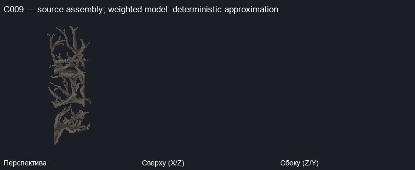


Source cells
| № | relative XYZ | source/properties | apps/transforms |
|---|
| 1 | [0, 0, 0] | minecraft:oak_log {'axis': 'z'} | [{'model': 'minecraft:block/oak_log', 'y': 270, 'offset': [0, 0, 0]}] |
| 2 | [1, 0, 1] | minecraft:jungle_log {'axis': 'z'} | [{'model': 'minecraft:block/jungle_log', 'y': 270, 'offset': [1, 0, 1]}] |
| 3 | [0, 3, 0] | minecraft:spruce_log {'axis': 'z'} | [{'model': 'minecraft:block/spruce_log', 'y': 270, 'offset': [0, 3, 0]}] |
| 4 | [1, 3, 1] | minecraft:acacia_log {'axis': 'z'} | [{'model': 'minecraft:block/acacia_log', 'y': 270, 'offset': [1, 3, 1]}] |
| 5 | [0, 6, 0] | minecraft:birch_log {'axis': 'z'} | [{'model': 'minecraft:block/birch_log', 'y': 270, 'preview_alternatives': 2, 'offset': [0, 6, 0]}] |
| 6 | [1, 6, 1] | minecraft:dark_oak_log {'axis': 'z'} | [{'model': 'minecraft:block/dark_oak_log', 'y': 270, 'offset': [1, 6, 1]}] |
Full context source cells
| relative XYZ | source/properties |
|---|
C009 OBJECT: 1+2; 3=CONTEXT / SPLIT:1+2 /3+4 / CONNECTED / NOT_OBJECT / NEEDS_REVIEW
C010 · Книги / багаж / ёмкости: конечная группа соседних source carriers; граница требует ручной проверки
Only explicitly listed source terrain regions; exact complete carrier cluster modulo Y rotation, not whole-world occurrence count; совпадений: 1; Пример: eh_s2:yharnam [-307, 56, -223]; rotations: [0]
Взвешенные/альтернативные модели: детерминированное приближение.
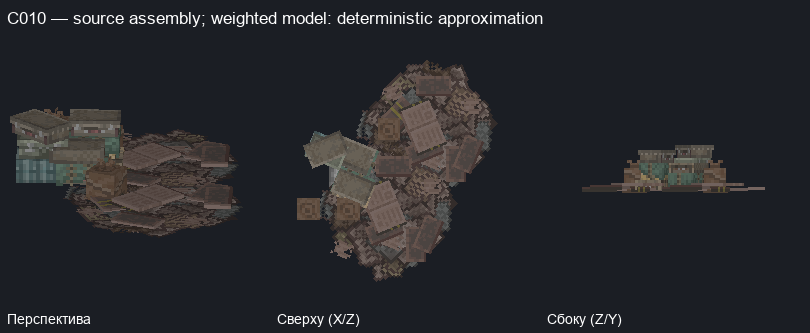
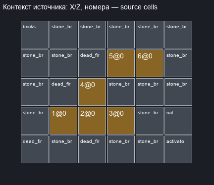
Source cells
| № | relative XYZ | source/properties | apps/transforms |
|---|
| 1 | [0, 0, 0] | minecraft:dead_bubble_coral_fan {'waterlogged': 'false'} | [{'model': 'minecraft:block/addon/bag_0', 'weight': 100, 'preview_alternatives': 4, 'offset': [0, 0, 0]}] |
| 2 | [1, 0, 0] | minecraft:dead_bubble_coral_fan {'waterlogged': 'false'} | [{'model': 'minecraft:block/addon/bag_0', 'weight': 100, 'preview_alternatives': 4, 'offset': [1, 0, 0]}] |
| 3 | [2, 0, 0] | minecraft:dead_horn_coral_fan {'waterlogged': 'false'} | [{'model': 'minecraft:block/addon/books_0', 'weight': 100, 'preview_alternatives': 2, 'offset': [2, 0, 0]}] |
| 4 | [1, 0, 1] | minecraft:oxidized_cut_copper_stairs {'facing': 'west', 'half': 'bottom', 'shape': 'straight', 'waterlogged': 'false'} | [{'model': 'minecraft:block/addon/cases_0', 'y': 90, 'offset': [1, 0, 1]}] |
| 5 | [2, 0, 2] | minecraft:dead_bubble_coral_fan {'waterlogged': 'false'} | [{'model': 'minecraft:block/addon/bag_0', 'weight': 100, 'preview_alternatives': 4, 'offset': [2, 0, 2]}] |
| 6 | [3, 0, 2] | minecraft:dead_horn_coral_fan {'waterlogged': 'false'} | [{'model': 'minecraft:block/addon/books_0', 'weight': 100, 'preview_alternatives': 2, 'offset': [3, 0, 2]}] |
Full context source cells
| relative XYZ | source/properties |
|---|
| [-1, -1, -1] | minecraft:stone_bricks {} |
| [-1, -1, 0] | minecraft:stone_bricks {} |
| [-1, -1, 1] | minecraft:stone_bricks {} |
| [-1, -1, 2] | minecraft:stone_bricks {} |
| [-1, -1, 3] | minecraft:stone_bricks {} |
| [-1, 0, -1] | minecraft:dead_fire_coral_fan {'waterlogged': 'false'} |
| [-1, 0, 3] | minecraft:dripstone_block {} |
| [-1, 1, 3] | minecraft:bricks {} |
| [0, -1, -1] | minecraft:stone_bricks {} |
| [0, -1, 0] | minecraft:stone_bricks {} |
| [0, -1, 1] | minecraft:stone_bricks {} |
| [0, -1, 2] | minecraft:stone_bricks {} |
| [0, -1, 3] | minecraft:stone_bricks {} |
| [0, 0, 1] | minecraft:dead_fire_coral_fan {'waterlogged': 'false'} |
| [1, -1, -1] | minecraft:stone_bricks {} |
| [1, -1, 0] | minecraft:stone_bricks {} |
| [1, -1, 1] | minecraft:stone_bricks {} |
| [1, -1, 2] | minecraft:stone_bricks {} |
| [1, -1, 3] | minecraft:stone_bricks {} |
| [1, 0, -1] | minecraft:dead_fire_coral_fan {'waterlogged': 'false'} |
| [1, 0, 2] | minecraft:dead_fire_coral_fan {'waterlogged': 'false'} |
| [1, 1, 1] | minecraft:barrier {} |
| [2, -1, -1] | minecraft:stone_bricks {} |
| [2, -1, 0] | minecraft:stone_bricks {} |
| [2, -1, 1] | minecraft:stone_bricks {} |
| [2, -1, 2] | minecraft:stone_bricks {} |
| [2, -1, 3] | minecraft:stone_bricks {} |
| [3, -1, -1] | minecraft:stone_bricks {} |
| [3, -1, 0] | minecraft:stone_bricks {} |
| [3, -1, 1] | minecraft:stone_bricks {} |
| [3, -1, 2] | minecraft:stone_bricks {} |
| [3, -1, 3] | minecraft:stone_bricks {} |
| [4, -1, -1] | minecraft:polished_andesite {} |
| [4, -1, 0] | minecraft:stone_bricks {} |
| [4, -1, 1] | minecraft:stone_bricks {} |
| [4, -1, 2] | minecraft:stone_bricks {} |
| [4, -1, 3] | minecraft:stone_bricks {} |
| [4, 0, -1] | minecraft:activator_rail {'powered': 'false', 'shape': 'north_south', 'waterlogged': 'false'} |
| [4, 0, 0] | minecraft:rail {'shape': 'north_east', 'waterlogged': 'false'} |
C010 OBJECT: 1+2; 3=CONTEXT / SPLIT:1+2 /3+4 / CONNECTED / NOT_OBJECT / NEEDS_REVIEW
C011 · Статуя / фонарь: конечная группа соседних source carriers; граница требует ручной проверки
Only explicitly listed source terrain regions; exact complete carrier cluster modulo Y rotation, not whole-world occurrence count; совпадений: 1; Пример: eh_s2:yharnam [-407, 84, -91]; rotations: [0]
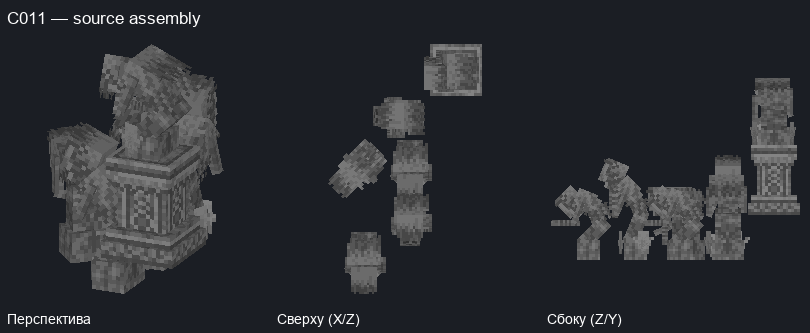
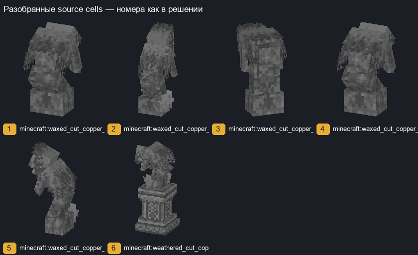
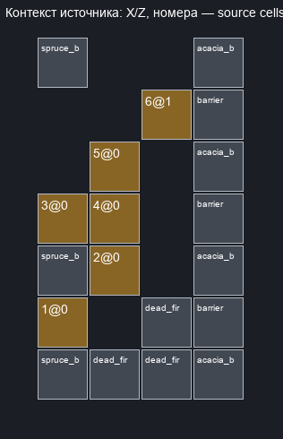
Source cells
| № | relative XYZ | source/properties | apps/transforms |
|---|
| 1 | [0, 0, 0] | minecraft:waxed_cut_copper_stairs {'facing': 'south', 'half': 'top', 'shape': 'straight', 'waterlogged': 'false'} | [{'model': 'minecraft:block/hold/statue_4', 'y': 90, 'offset': [0, 0, 0]}] |
| 2 | [1, 0, 1] | minecraft:waxed_cut_copper_stairs {'facing': 'south', 'half': 'bottom', 'shape': 'straight', 'waterlogged': 'false'} | [{'model': 'minecraft:block/hold/statue_3', 'y': 90, 'offset': [1, 0, 1]}] |
| 3 | [0, 0, 2] | minecraft:waxed_cut_copper_stairs {'facing': 'east', 'half': 'top', 'shape': 'outer_right', 'waterlogged': 'false'} | [{'model': 'minecraft:block/hold/statue_5', 'y': 0, 'offset': [0, 0, 2]}] |
| 4 | [1, 0, 2] | minecraft:waxed_cut_copper_stairs {'facing': 'south', 'half': 'top', 'shape': 'straight', 'waterlogged': 'false'} | [{'model': 'minecraft:block/hold/statue_4', 'y': 90, 'offset': [1, 0, 2]}] |
| 5 | [1, 0, 3] | minecraft:waxed_cut_copper_stairs {'facing': 'east', 'half': 'bottom', 'shape': 'straight', 'waterlogged': 'false'} | [{'model': 'minecraft:block/hold/statue_3', 'y': 0, 'offset': [1, 0, 3]}] |
| 6 | [2, 1, 4] | minecraft:weathered_cut_copper_stairs {'facing': 'east', 'half': 'bottom', 'shape': 'straight', 'waterlogged': 'false'} | [{'model': 'minecraft:block/hold/statue', 'y': 0, 'offset': [2, 1, 4]}] |
Full context source cells
| relative XYZ | source/properties |
|---|
| [0, -1, -1] | minecraft:spruce_button {'face': 'floor', 'facing': 'east', 'powered': 'false'} |
| [0, -1, 1] | minecraft:spruce_button {'face': 'floor', 'facing': 'east', 'powered': 'false'} |
| [0, -1, 5] | minecraft:spruce_button {'face': 'floor', 'facing': 'east', 'powered': 'false'} |
| [1, -1, -1] | minecraft:dead_fire_coral_fan {'waterlogged': 'false'} |
| [2, -1, -1] | minecraft:dead_fire_coral_fan {'waterlogged': 'false'} |
| [2, -1, 0] | minecraft:dead_fire_coral_fan {'waterlogged': 'false'} |
| [2, -1, 4] | minecraft:chiseled_deepslate {} |
| [3, -1, -1] | minecraft:barrier {} |
| [3, -1, 0] | minecraft:barrier {} |
| [3, -1, 1] | minecraft:barrier {} |
| [3, -1, 2] | minecraft:barrier {} |
| [3, -1, 3] | minecraft:barrier {} |
| [3, -1, 4] | minecraft:barrier {} |
| [3, -1, 5] | minecraft:barrier {} |
| [3, 0, -1] | minecraft:cut_copper_stairs {'facing': 'east', 'half': 'top', 'shape': 'straight', 'waterlogged': 'false'} |
| [3, 0, 0] | minecraft:cut_copper_stairs {'facing': 'east', 'half': 'top', 'shape': 'straight', 'waterlogged': 'false'} |
| [3, 0, 1] | minecraft:cut_copper_stairs {'facing': 'east', 'half': 'top', 'shape': 'straight', 'waterlogged': 'false'} |
| [3, 0, 2] | minecraft:cut_copper_stairs {'facing': 'east', 'half': 'top', 'shape': 'straight', 'waterlogged': 'false'} |
| [3, 0, 3] | minecraft:cut_copper_stairs {'facing': 'east', 'half': 'top', 'shape': 'straight', 'waterlogged': 'false'} |
| [3, 0, 4] | minecraft:cut_copper_stairs {'facing': 'east', 'half': 'top', 'shape': 'straight', 'waterlogged': 'false'} |
| [3, 0, 5] | minecraft:cut_copper_stairs {'facing': 'east', 'half': 'top', 'shape': 'straight', 'waterlogged': 'false'} |
| [3, 1, -1] | minecraft:barrier {} |
| [3, 1, 0] | minecraft:barrier {} |
| [3, 1, 1] | minecraft:barrier {} |
| [3, 1, 2] | minecraft:barrier {} |
| [3, 1, 3] | minecraft:barrier {} |
| [3, 1, 4] | minecraft:barrier {} |
| [3, 1, 5] | minecraft:barrier {} |
| [3, 2, -1] | minecraft:acacia_button {'face': 'floor', 'facing': 'east', 'powered': 'false'} |
| [3, 2, 1] | minecraft:acacia_button {'face': 'floor', 'facing': 'east', 'powered': 'false'} |
| [3, 2, 3] | minecraft:acacia_button {'face': 'floor', 'facing': 'east', 'powered': 'false'} |
| [3, 2, 5] | minecraft:acacia_button {'face': 'floor', 'facing': 'east', 'powered': 'false'} |
C011 OBJECT: 1+2; 3=CONTEXT / SPLIT:1+2 /3+4 / CONNECTED / NOT_OBJECT / NEEDS_REVIEW
C012 · Дерево / растительность: конечная группа соседних source carriers; граница требует ручной проверки
Only explicitly listed source terrain regions; exact complete carrier cluster modulo Y rotation, not whole-world occurrence count; совпадений: 1; Пример: eh_s2:yharnam [-457, 60, -227]; rotations: [0]
Взвешенные/альтернативные модели: детерминированное приближение.
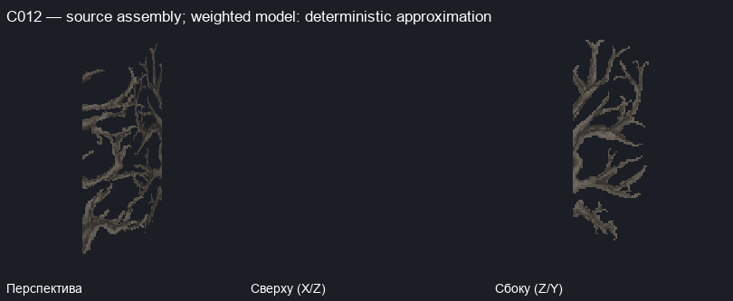
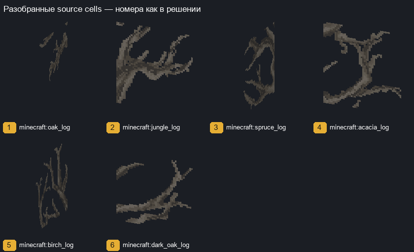
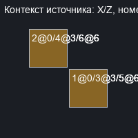
Source cells
| № | relative XYZ | source/properties | apps/transforms |
|---|
| 1 | [0, 0, 0] | minecraft:oak_log {'axis': 'x'} | [{'model': 'minecraft:block/oak_log', 'y': 180, 'offset': [0, 0, 0]}] |
| 2 | [-1, 0, 1] | minecraft:jungle_log {'axis': 'z'} | [{'model': 'minecraft:block/jungle_log', 'y': 270, 'offset': [-1, 0, 1]}] |
| 3 | [0, 3, 0] | minecraft:spruce_log {'axis': 'x'} | [{'model': 'minecraft:block/spruce_log', 'y': 180, 'offset': [0, 3, 0]}] |
| 4 | [-1, 3, 1] | minecraft:acacia_log {'axis': 'z'} | [{'model': 'minecraft:block/acacia_log', 'y': 270, 'offset': [-1, 3, 1]}] |
| 5 | [0, 6, 0] | minecraft:birch_log {'axis': 'x'} | [{'model': 'minecraft:block/birch_log', 'y': 180, 'preview_alternatives': 2, 'offset': [0, 6, 0]}] |
| 6 | [-1, 6, 1] | minecraft:dark_oak_log {'axis': 'z'} | [{'model': 'minecraft:block/dark_oak_log', 'y': 270, 'offset': [-1, 6, 1]}] |
Full context source cells
| relative XYZ | source/properties |
|---|
C012 OBJECT: 1+2; 3=CONTEXT / SPLIT:1+2 /3+4 / CONNECTED / NOT_OBJECT / NEEDS_REVIEW